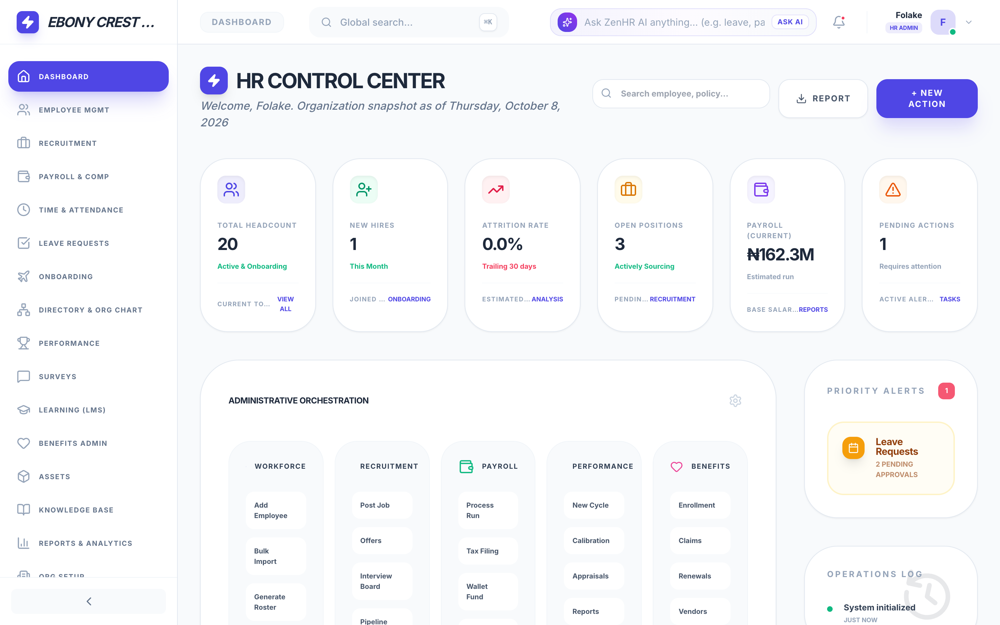
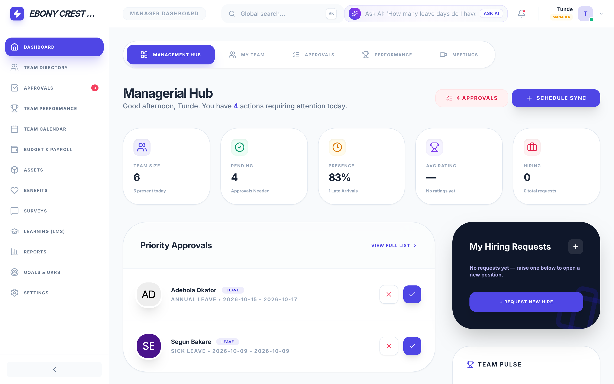
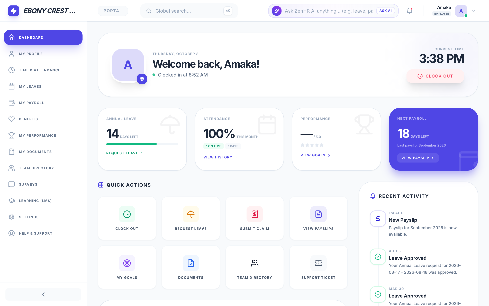

(a) HR Administrator
Full module menu; company-wide headcount, open positions, payroll estimate and priority alerts.
The menu only shapes navigation. Every API route re-checks the caller's role and company on the server (Section 3.8.2).

(b) Manager
Reduced menu; team size, presence and pending approvals cover direct reports only.
The menu only shapes navigation. The server limits each approval to the manager's own reports before any change is made.

(c) Employee
Self-service menu over the employee's own record: clock status, leave balance and latest payslip.
The menu only shapes navigation. Employee routes read the caller's identity from the verified token, never from the request.